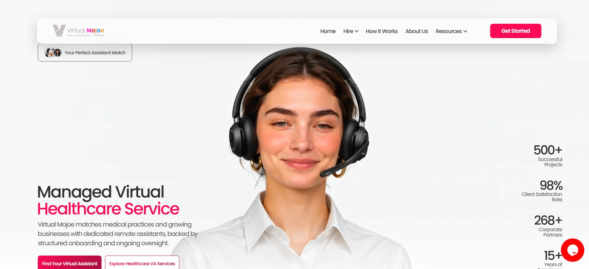

VIRTUAL MEDICAL ASSISTANTS, HEALTHCARE SUPPORT SERVICES & MEDICAL PRACTICE OPERATIONS
Virtual MoJoe – Content SEO and AI Search Visibility for Virtual Medical Assistant Services
I worked on SEO initiatives for Virtual MoJoe, focusing on building organic visibility around virtual medical assistant services and healthcare support solutions. The strategy combined commercial keyword targeting, informational content, topical authority development and AI search optimization to support qualified lead generation.

Project Snapshot
SEO focus areas
- On-Page SEO
- Content Strategy
- Commercial Keyword Targeting
- GEO & AEO
- Semantic SEO
- Technical SEO
- Internal Linking
- Off-Page SEO
The Challenge
Virtual medical assistant services are a newer, evolving category. The site needed to be found by practices researching the idea and by those ready to hire, in both traditional and AI search.
- Building organic visibility for a service category that many practices are still learning about.
- Serving two audiences: practices researching how virtual assistants help, and those comparing providers.
- Developing topical authority across healthcare practice operations and administrative support.
- Making content easy for AI search platforms to extract for both commercial and informational questions.
- Establishing authority on a cost-conscious basis.
- Turning visibility into qualified leads.
SEO Strategy & Implementation
The work, organized by discipline. Open any block to see what I did, the approach, how it was carried out and why it mattered.
- Commercial PagesSupporting BlogsComparison Content
- Topical Authority
- Search Visibility
- Qualified Leads
- Entity Optimization
- Direct Answer Structure
- Supporting Evidence
- Technical Accessibility
- AI Search Visibility
Site architectureUsing three page categories so commercial and informational searches both have a purpose-built page.
What I worked on
Using three page categories so commercial and informational searches both have a purpose-built page.
The strategy
Commercial pages meet buyers, depth blogs explain the subject and build authority, and best-of and comparison blogs serve healthcare outsourcing research.
How it was implemented
Keywords and topics were assigned to the categories below and connected with internal links.
Why it mattered
The structure lets one site serve searchers at every stage, from curiosity to a decision.
- Business Pages: commercial service pages for users looking for virtual medical assistant services
- Depth Blogs: informational articles on virtual medical assistants, healthcare practice operations and administrative support
- Best-of and Comparison Blogs: commercial-informational content for queries about healthcare outsourcing and virtual medical assistant solutions
On-page SEO & content strategyResearching, structuring and connecting content around search intent and topic clusters.
What I worked on
Researching, structuring and connecting content around search intent and topic clusters.
The strategy
Content was planned around intent and built into topical clusters, with semantic coverage and entities that make each page complete on its subject.
How it was implemented
Pages followed a consistent structure, were linked within their clusters, and were refreshed as needed.
Why it mattered
Topic clusters demonstrate depth and help search engines understand what the site is about.
- Search intent mapping
- Keyword research
- Primary and secondary keyword targeting
- Content structure optimization
- Semantic keyword coverage
- Entity optimization
- Content gap analysis
- Internal linking
- Topical cluster development
- Content refreshes
GEO & AEOStructuring content so AI search platforms can give direct answers from it.
What I worked on
Structuring content so AI search platforms can give direct answers from it.
The strategy
Clear headings, direct answers, relevant entities, supporting information and commercial context make content easier to understand and use.
How it was implemented
The verified AI visibility examples are one commercial query and one informational query.
Why it mattered
Showing up in AI answers for both comparison and informational questions widens how the site can be discovered.
- Commercial query: Best Virtual Medical Assistant Companies in Alabama
- Informational query: How Virtual Medical Assistants Help Small Medical Practices Grow in 2026
- AI extraction-friendly formatting
- Conversational query research
- Entity optimization
- Comparison content
- Supporting statistics and references
- EEAT and topical authority
- Technical crawlability and structured data
Technical SEOKeeping the site crawlable, indexable and clearly structured.
What I worked on
Keeping the site crawlable, indexable and clearly structured.
The strategy
A sound technical base ensures the content and architecture can be found and interpreted.
How it was implemented
Setup and audits covered the items below.
Why it mattered
Technical clarity supports both traditional and AI search.
- XML sitemap management
- Robots.txt
- Crawlability and indexation
- Canonicalization
- Technical audits
- Structured data
- SEO-friendly URLs
- Website architecture
Off-page SEODeveloping authority cost-effectively.
What I worked on
Developing authority cost-effectively.
The strategy
Listings, relevant link exchanges and research-led content were used rather than large paid programs.
How it was implemented
Work combined the activities below.
Why it mattered
Authority supports visibility for commercial and informational topics alike.
- Niche directories
- Business listings
- Relevant link exchanges
- Research-based content
- HARO-style journalist outreach
- Cost-effective authority development
Results & Achievements
Verified results for Virtual MoJoe. No traffic or lead totals are published for this site.
- Improved visibility for commercial and informational search topics
- Contribution to the broader lead-generation website growth strategy
- Inbound leads referred from ChatGPT
Traffic and lead totals are not published for this project. Inbound leads referred from ChatGPT are noted without a lead count.
MY ROLE
SEO Specialist – Healthcare Content SEO, GEO/AEO & Lead Generation
I worked on the content and organic search strategy, including how content is structured and optimized and how it becomes visible in AI search.
- Content strategy and semantic SEO
- Commercial keyword targeting
- On-page optimization
- Technical SEO
- AI search visibility initiatives
Where this fits in my experience
Newer lead-generation websites (Medical Lien Management, GreenSense Billing and Virtual MoJoe): building SEO foundations, designing scalable architecture, targeting high-intent commercial keywords, supporting business pages with informational content, developing GEO and AEO visibility and generating qualified leads.
My work also spans established affiliate websites: VPNRanks and All About AI.
Related Projects

Medical Lien Management
Worked on improving organic visibility for competitive medical lien management searches through commercial keyword targeting,…
View case study →
GreenSense Billing
Contributed to search optimization for medical billing services through commercial keyword research, service-page optimizatio…
View case study →Looking to Improve Your Website's Organic Search Performance?
Let's discuss how strategic SEO, content optimization, and AI search visibility can help your business grow.